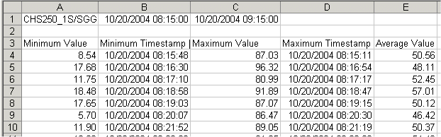

Using the worksheet function dialogs
The following example illustrates the use of the Configure Calculated Data function to examine the use of min, max, and end values for a single tag and time span.
This scenario examines the min, max, and mean statistics relating to a single tag (FIC-101.PV) over a one-hour period and breaks the hour down into 60 one-minute intervals. The table produced will have the following column headers:
- Minimum Value
- Minimum Timestamp
- Maximum Value
- Maximum Timestamp
- Average Value
To make the worksheet useful for future queries, the tag and time period will be specified in the worksheet. This will allow you to change the tag or date/time by simply changing the contents of cells A1 and B1 in order to see data for a different tag on a different day.
To create the Excel worksheet
- Open Microsoft Excel.
- In cell A1, enter the tag name, such as CHS250_1S/SGGN1/OUT.CV.
- In cell B1, enter the start date and time in the format mm/dd/yyyy hh:mm:ss; for example, 10/20/2004 08:15:00. (Note that the date format required by Excel is dependent on the your locale.)
- In cell C1, enter the end time using a formula, for example "=B1 + 01:00". This sets the end time for the period to one hour from the start time.
- Select cell A3 as the cell in which to enter the formula for the worksheet function. This will be the top left cell of the array in which the results are displayed.Note: A range of 61 rows by 5 columns will be needed for the results. (This includes the header row and 60 rows of data.) Rather than select the entire range, you can select the top left cell of the range, for example, A3, and then use the option "Adjust selection to accommodate results" in the worksheet function dialog to automatically extend the range to the appropriate size.
To use the Configure Calculated Data Function dialog
The Connection field is pre-populated with the default DeltaV Continuous Historian connection details. A browse button is available if it is necessary to browse to an alternate source.
- For Period, leave the Mode as Local Time.
- For the Period start time, select Cell Reference and enter B1 (or $B$1) to indicate that the start time is stored in cell B1 (or click the Cell Reference button and then click in cell B1 in the worksheet).
- For the Period end time, select Cell Reference and enter C1 (or $C$1) to indicate that the end time is stored in cell C1 (or click the Cell Reference button and then click in cell C1 in the worksheet).
- For Intervals, select Interval, enter 1 and select minute(s) from the drop-down list.
- Under Display Data, select Header Row to show the column names for the returned data.
- Select the Columns by holding the CTRL key and selecting Minimum Value, Minimum Timestamp, Maximum Value, Maximum Timestamp, and Average Value.
- Click the right arrow button to add the selected columns to the Selected Columns list.Note: As changes are made to the optional fields, the Worksheet Required Range value is updated to show the dimensions of the array that will be yielded.
- Under Worksheet, make sure the Adjust selection to accommodate results (if necessary) option is selected. (By default, this option is selected.)Note: Since there is no data below or to the right of the selected cell, there is no need to check the Insert rows and columns check box. Also, since the selected dates do not run across the daylight saving change, there is no need to check the Extra rows check box.
- To assess the quality of the data for the period specified, click Data Overview. The History Data Overview dialog enables you to review the intervals and adjust the period if desired. Consult the help for information on how to use the dialog.
- When the Period has been fine tuned in the History Data Overview dialog, click Use Period.
- Click the Try It button to preview the results.Note: This button opens a grid containing the actual data as queried from the DeltaV Continuous Historian database. The Try It window shows the row and column at which the data will be inserted. The dialog can be closed before the query is complete. While the query is being performed, the title bar indicates that it is working. On completion, the title bar indicates the number of rows and columns and the time taken to perform the query.
The resulting worksheet, after clicking OK (and reformatting the column widths and the date format), is shown below:
